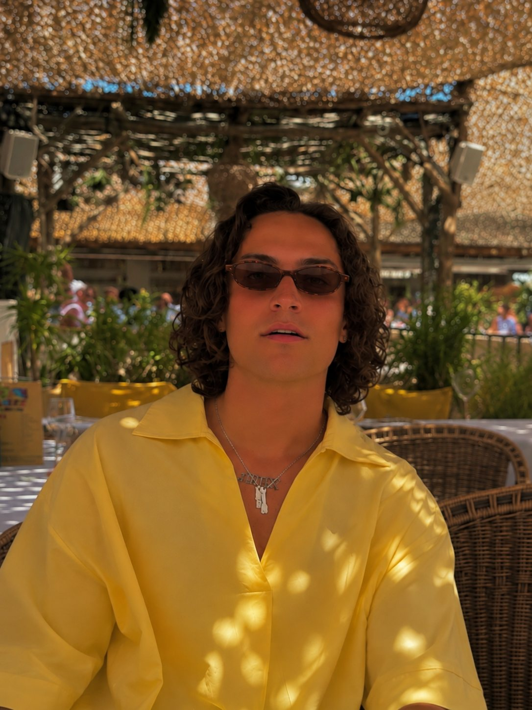

Élevé par la musique
ROMY est un DJ et producteur lyonnais qui navigue entre French touch, house et electro. Fils de DJ, il passe par la production avant de prendre les platines il y a six ans. Ses morceaux ont depuis été joués par Keinemusik, Adam Port, Marco Carola, Marten Lou et Alex Wann.
ROMY a grandi au son des disques de son père, lui-même DJ. La musique électronique fait partie de son quotidien depuis l'enfance, et c'est naturellement par la production qu'il entre dans le métier, en apprenant à construire ses propres morceaux avant de les défendre en club.
Il passe derrière les platines il y a six ans. Son son flotte entre l'héritage de la French touch, la chaleur de la house et l'énergie de l'electro : des sets qui accompagnent un dîner qui s'étire autant qu'une piste pleine à 3 h du matin.
À Lyon, il joue pour le groupe Lavorel, notamment à l'Azar, à la Maison Gerland et au Members, ainsi qu'au Six, au Petit Salon et au Mamy Rose. Il se produit aussi régulièrement dans le Sud, à Saint-Tropez.
Côté studio, ses productions ont trouvé leur place dans les sets d'artistes internationaux comme Keinemusik, Adam Port, Marco Carola, Marten Lou et Alex Wann.
+6ans derrière les platines
Fils de DJ, il grandit entouré de disques. Il commence par la production, puis passe derrière les platines il y a six ans.

+2ports d'attache : Lyon et Saint-Tropez
- Azar / Maison Gerland / Members Lyon
- Le Six / Brotteaux Lyon
- Le Petit Salon Lyon
- Mamy Rose Lyon
- NUSA Saint-Tropez
+5+artistes internationaux ont joué ses tracks
- Keinemusik Berlin
- Adam Port Berlin
- Marco Carola Napoli
- Marten Lou Allemagne
- Alex Wann France